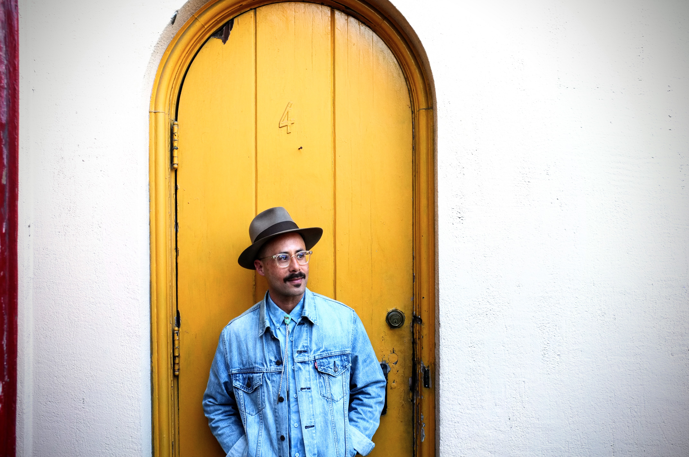
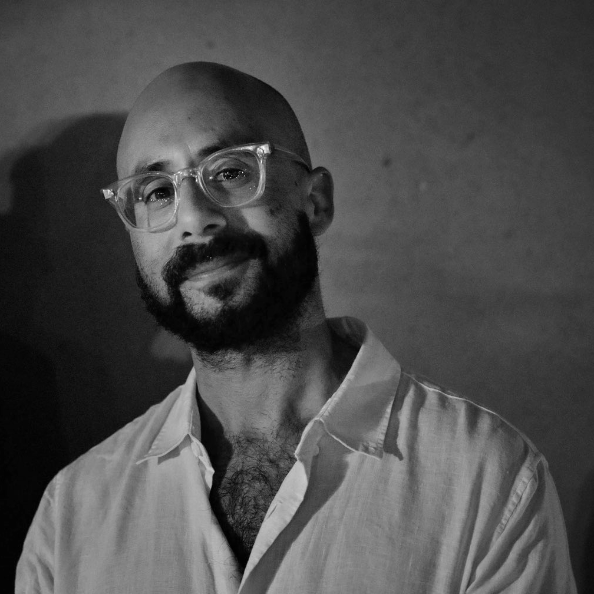
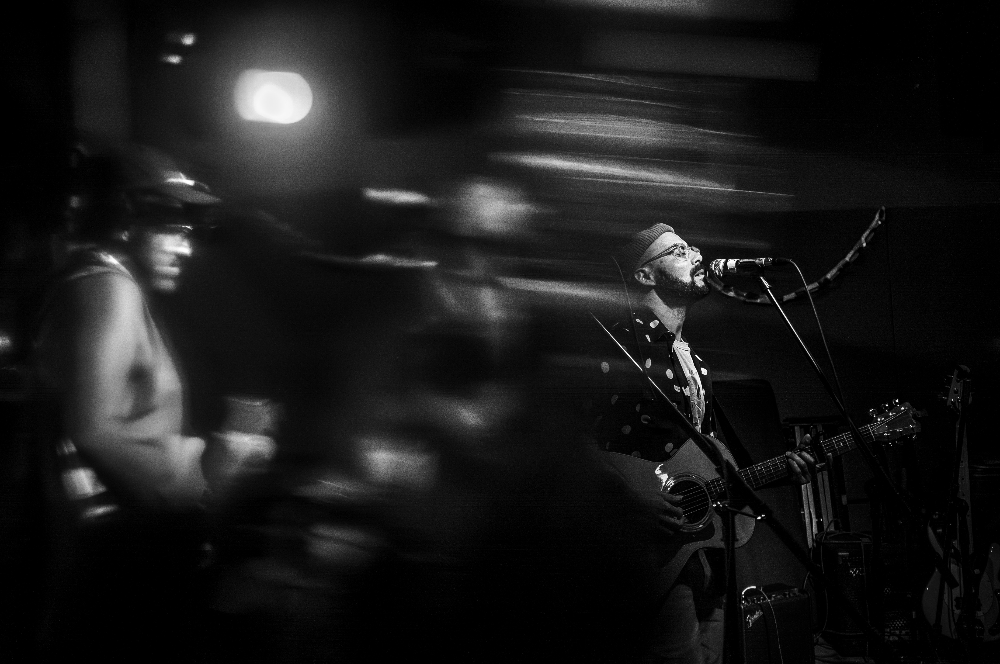
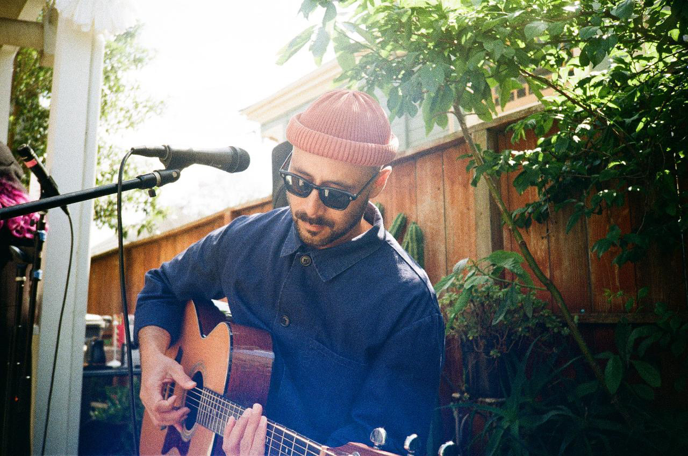
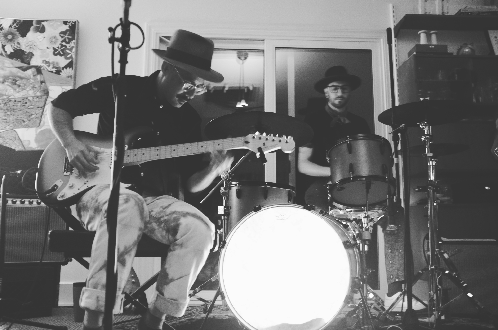

Latest Single
Indeed I Do
Written during an arts residency in Ubud, Bali, following the unexpected loss of a close friend. Accompanied by a music video directed by Bay Area filmmaker Edgar Lara. Art by Charlie Boyd.
Release Page →
Songwriter & multi-instrumentalist.
Written during an arts residency in Ubud, Bali, following the unexpected loss of a close friend. Accompanied by a music video directed by Bay Area filmmaker Edgar Lara. Art by Charlie Boyd.
Release Page →
Born in Indonesia and raised in Northern California, Jaime Tjahaja writes through a third-culture lens — an artist moving between hemispheres of influence, channeling a deeply personal instinct into songs that speak directly to the great American sonic landscape.
His songwriting pairs intimate lyricism with vivid imagery — vintage guitar tones, graceful rhythms, and lyrical precision meeting in timeless harmony. His music carries faint echoes of Paul Simon's melodic grace and Jackson Browne's singular presence, while Dylan's mercurial spirit lingers at the edges of influence — never quite defining the work. What emerges is a fresh take on the evolving American songbook: deeply rooted, fully present in the moment, and unmistakably his own.
A working musician for over two decades, Jaime studied Northern Hindustani classical music and Gamelan at UC Santa Cruz, played in Bay Area bands including Buckeye Knoll and alongside Alycia Lang, and has been a full member of Free Key Choir since 2023. He launched his solo songwriting project at the height of the pandemic — a veteran musician, arriving on his own terms.
"Rather than trying to explain or resolve the grief that inspired it, 'Indeed I Do' is content to float around inside it... The resulting music video feels like fragments of memory, right down to the haunting vocals of Maya Elise, who never appears in the video, but whose presence looms large."
— Cosmic Amanda, Founder & Executive Director · BFF.FM
Video Premiere, August 6, 2026


